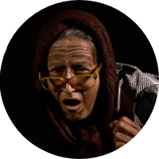

Equipo
Igor Martínez (Director artístico)
Actor, Director, Profesor de Teatro, Dramaturgo. Inicia su trabajo escénico en la ciudad de Caracas con el grupo de Teatro del Instituto Universitario Pedagógico de Caracas. (1981 – 1986) Director artístico de la agrupación TARIMA TEATRO donde ha representado más de 40 personajes en diversos espectáculos de repertorio nacional e internacional, Performance y Café Concert. Fundador, Presidente, Coordinador Artístico de la FUNDACIÓN TABLÓN TEATRO con treinta y un años de fundada y veintiún puestas en escena. Ha sido docente de Arte y Teatro para diversas instituciones educativas públicas y privadas En la actualidad se desempeña como profesor asistente en la cátedra de Actuación en la Escuela de Artes Escénicas, Facultad de Arte de la Universidad de Los Andes, en Mérida - Venezuela).

Rossana Toro (Cantaralia)
Actriz, productora y docente de teatro. Incursiona en el mundo del Teatro desde su infancia en el Ateneo de Valera. Formó para del elenco estable del sistema de Teatros Juveniles de Venezuela, núcleo Valera. (1992) Ha participado en festivales de teatro nacionales e internacionales representando a Venezuela en Costa Rica y España. Merecedora del premio "Marco Antonio Eteddgui" como mejor actriz, otorgado por la Fundación Rajatabla.

Aidaliz Guarisma (Olimpia)
Actriz, cantante y productora. Inicia su formación actoral en el sistema nacional de Teatros Juveniles de Venezuela (1997) en una línea de formación integral. Posteriormente ingresa al taller de jóvenes actores de Tarima Teatro (2000) espacio que le permitió establecerse como actriz de su planta estable e incursionar en la producción. Actualmente, amplía su oficio y profesión como actriz, incorporando elementos propios de la realización audiovisual, así como también ofrece sus primeros pasos como escritora.
Patrocinadores